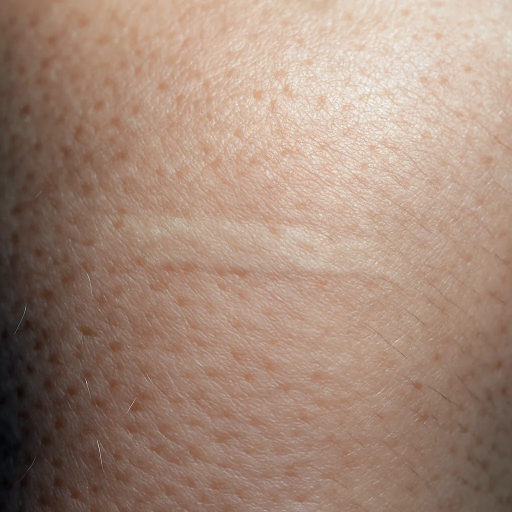

What is Tattoo Scar Camouflage?
Scar camouflage, sometimes called skin camouflage tattooing or micropigmentation Austin style, is a sophisticated procedure designed to disguise scars and skin imperfections. Unlike decorative tattooing, the goal isn't artistic expression but meticulous restoration. Using specialized techniques and custom-blended pigments, the artist carefully deposits color into the scar tissue (specifically, the upper dermis) to match the surrounding healthy skin.
This technique requires exceptional skill in:
- Color Theory: Accurately matching skin tones and undertones, anticipating how pigment will heal in scar tissue.
- Skin Anatomy: Understanding how scar tissue differs from healthy skin and how it accepts pigment.
- Precise Application: Gently implanting pigment at the correct depth to achieve a seamless blend.
The aim is to make the scar significantly less noticeable, restoring a more uniform appearance to the skin.
Who Can Benefit from Scar Camouflage in Austin?
This advanced technique can help individuals in Austin dealing with various types of visible scarring where color inconsistency is the primary concern:
- Tattoo Removal Scars: Especially common after laser removal, which can cause hypopigmentation (lightening) or hyperpigmentation (darkening) of the skin.
- Surgical Scars: Including those from cosmetic surgery (like facelifts, breast augmentation/reduction), C-sections, or medical procedures.
- Injury Scars: Scars resulting from accidents or burns.
- Acne Scars: Certain types of discolored acne scars (typically flat) can be camouflaged.
- Stretch Marks (Striae): While results can vary, camouflage can sometimes help reduce the visibility of certain stretch marks.
- Vitiligo or Skin Grafts: In specific cases and after careful assessment, camouflage may help blend areas of pigment loss.
It's crucial to understand that scar camouflage primarily addresses color differences. While it might slightly improve the appearance of texture, it won't eliminate significantly raised (hypertrophic) or indented (atrophic) scars.
The Studio Bella Advantage: Why Expertise in Paramedical Tattooing Matters
Choosing a practitioner for scar camouflage in Austin requires careful consideration. This isn't standard permanent makeup; it's a specialized paramedical service demanding advanced training and experience.
Cookie Bandel: Austin's Paramedical Tattooing Expert
At Studio Bella, you're in the exceptionally skilled hands of Cookie Bandel. As a Master Permanent Makeup Technician with extensive experience dating back to 2008, Cookie possesses the deep knowledge required for complex paramedical work. Her reputation for meticulous artistry, particularly in corrective procedures and other paramedical services like areola repigmentation, makes her a sought-after expert not just in Austin, but across Texas and beyond. This level of experience is vital when working with the unique challenges presented by scar tissue.
Focus on Natural, Customized Results
The ultimate goal of scar camouflage is a natural blend. Cookie excels at precise color matching, taking into account your unique skin tone, undertones, and how pigments are likely to heal within the scar. During your free consultation, she'll work closely with you to understand your goals and ensure the treatment plan is tailored to achieve the most seamless, natural-looking result possible.
Unwavering Commitment to Safety
Working on scar tissue requires adherence to the highest permanent makeup safety standards. Studio Bella utilizes sterile, single-use needles, premium-quality pigments, and hospital-grade sterilization protocols. Cookie's gentle, precise technique minimizes trauma to the delicate scar tissue, promoting safe and effective healing.
The Scar Camouflage Process: What to Expect
Embarking on scar camouflage typically involves these key steps:
- Consultation: A crucial first step. Cookie will assess your scar's age, type, texture, and coloration, discuss your medical history, and determine if you're a suitable candidate. Realistic expectations and the potential need for multiple sessions will be discussed.
- Color Matching: This intricate process involves blending pigments to create the perfect match for your surrounding skin tone. Test spots might be performed.
- Procedure Day: Topical anesthetics are applied to maximize comfort (addressing the "does it hurt?" concern, though sensitivity varies on scar tissue). Cookie then carefully implants the custom-blended pigment using specialized techniques.
- Healing & Follow-Up Sessions: Scar tissue accepts pigment differently than healthy skin, often requiring multiple sessions (typically 2-4 or more, spaced several weeks apart) to gradually build color density and achieve the desired camouflage effect. Following aftercare instructions is vital during the healing phases between sessions. Patience is essential for the best outcome.
Important Considerations for Scar Camouflage
While highly effective for many, keep these points in mind:
- Scar Maturity is Key: Scars must be fully healed (usually 1 year+) and stable in color.
- Texture vs. Color: Camouflage primarily addresses color discrepancies. It won't flatten raised scars or fill indented ones.
- Sun Exposure: Camouflaged areas will not tan like the surrounding skin. Diligent sun protection is crucial to maintain the color match long-term.
- Realistic Expectations: The goal is significant improvement and reduced visibility, not complete invisibility.
Have more questions? Our FAQ page might help, or book a consultation!
Conclusion: Restoring Confidence Through Skillful Camouflage
Visible scars, whether from tattoo removal, surgery, or injury, don't have to be a permanent source of self-consciousness. Expert scar camouflage tattooing in Austin offers a sophisticated way to restore skin tone uniformity and significantly reduce the appearance of scars. By blending artistry with advanced paramedical techniques, Studio Bella and Master Technician Cookie Bandel provide a path towards renewed confidence and skin you feel comfortable in.
Ready to explore how scar camouflage can help you?
Let's discuss your unique situation in a confidential setting.